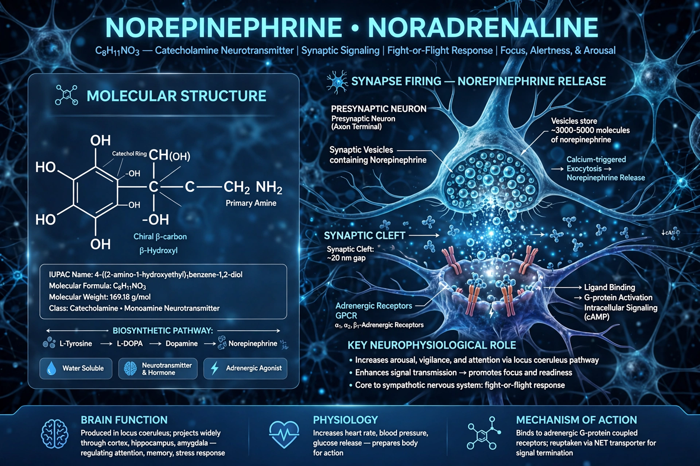

Norepinephrine (NE), also called noradrenaline (NA), is an organic chemical in the catecholamine family that functions in the brain and body as both a hormone and a neurotransmitter. It is central to arousal, alertness and the fight-or-flight response.

| Norepinephrine | |
|---|---|
| Formula | C8H11NO3 |
| Class | Catecholamine |
| Precursor | Dopamine |
| Receptors | Adrenergic α and β |
Released from sympathetic nerve endings and the adrenal medulla, norepinephrine increases heart rate, blood pressure and blood glucose, and constricts blood vessels. In the brain, neurons from the locus coeruleus project widely and regulate attention, mood, sleep-wake and memory.
As a drug, intravenous norepinephrine is a first-line vasopressor for septic shock and other hypotensive emergencies. Drugs altering its reuptake (SNRIs) are used for depression, anxiety and ADHD. See Epinephrine, Dopamine, Sympathetic nervous system.